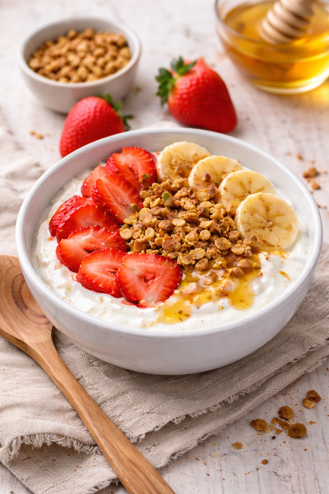

Honey Yogurt Fruit Bowl

A fresh and healthy dish that works well for breakfast or a light dessert.
The creamy yogurt pairs beautifully with sweet fruit and honey.
- 1 cup plain Greek yogurt
- 1 tablespoon honey
- ½ cup strawberries, sliced
- ½ banana, sliced
- 2 tablespoons granola
- A pinch of cinnamon (optional)
- Spoon the yogurt into a bowl.
- Drizzle honey over the yogurt and mix gently.
- Arrange the fruit on top.
- Sprinkle with granola and cinnamon.
- Serve immediately.